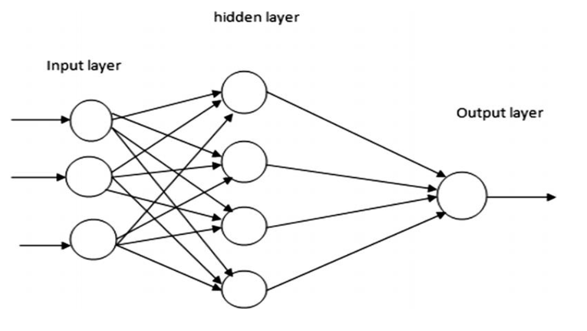

Hello
My name is Dora, and I am a software developer from Turkey. I live in London.
Education
MSc - City St. George's, University of London
(Present) MSc in Computer Game Technologies with VR
Undergrad - Sabanci University
(January 2023)
BSc in Computer Science - 4.00 GPA - First ranking student
Minor in Philosophy
Work Experience
Full Stack PHP/Laravel Developer @ Freelance
(March 2025 - Present) I develop bespoke web and mobile apps for businesses. I use Laravel/PHP for web and Flutter or React Native for mobile. Sometimes I do this with friends and sometimes alone. I worked on Meti-Box last year, and right now I'm working on Meti-Bills and Musiki FM.
Full Stack PHP/Laravel Developer @ Net Koruma
(September 2023 - March 2025)
Net Koruma is a B2B anti-phishing solution. We find phishing online and report them to relevant authorities. I found this to be a very valuble and ethical business. My responsibilities were basically everything. Optimizations, new features, automatization of tasks to relieve the burden of the analysts.
I worked on scrapers, facebook ad library, instagram mobile app, and more.
Mobile developer @ Upcarta
(March 2022 - September 2023)
Upcarta is a platform for discovering, organizing and sharing content. Its killer feature is gathering scattered content recommendations, curations and collections from all around the web, streamlining the process of discovering content. I have a strong belief that what matters to humans will be humans they care about.
For the past year, I have been developing the mobile app of Upcarta. We use Flutter.
I learned Flutter all by myself and taught the rest of the team on the go. I had to make the architectural and stylistic decisions because flutter didn't/doesn't really have the idiomatic ways to guide us. It was quite a challenge.
One thing that made everything too difficult was the "Clean Code" advice we found on the internet as complete beginners. It overcomplicated things and we didn't know what we were doing for a long time. I would do things very differently today.
Upcarta is on the app stores.
Visiting Researcher Intern @ University of Kent
(Summer 2022)
At Kent, I was responsible with implementing a tool to collect data about DDoS protection adoption across the internet. I used Go, MongoDB and GCC. Since the tool was meant to scan the a huge number of domains weekly, it had to be performant. I benchmarked several approaches and libraries.
During the internship, I discovered my interest in programming languages and explored the academic life. I love learning new programming syntax, semantics and paradigms.
NLP Intern @ YAZI AI
(Summer 2021)
This project aimed to be a pioneer in Turkish NLP, as it was one of the first works on Turkish Financial Sentiment Analysis. I built scrapers for financial news websites and stock market movements. Then I tried to apply NER to the data I collected. The internship ended due to time constraints before I could complete the project. I worked with Python.
I was completely inexperienced and mostly confused. I was very dependent on my supervisor and she was quite busy, so things did not really go as I wanted them to go.
Today
I am working as a freelance software developer and my game Mania. I am using Odin and Raylib to make my game. The main goals are (1) become a great programmer and (2) make this a beautiful, real game.
1. Passing messages between threads
I am trying to implement simple message-passing channels in Rust. I want to share/log my learning progress. I think it will be fun to return to it in some months/years.
Note: I am a complete beginner to Rust and haven't dealt with this sort of concurrency before.
The task is simple: I will have two channels running on different threads or running as concurrent processes. One of them will be the client, asking for the amount of ice cream the server has. Client's actions can be triggered by command line inputs.
The server will tell the client how much ice cream it has. The ice cream is 1kg to begin with, and melts by 10g each second. Bonus: each question can decrease the amount of ice cream by 20g. This will force the server to implement some kind of concurrent operation handling.
First try
I read tokio docs. I initialize the channel, and pass the transmitter and receiver to the tasks I spawn in the main thread (which felt intuitive). But the program immediately ends. No messages after the initial "Let's go!" are printed.
use tokio::sync::mpsc;
#[tokio::main]
async fn main() {
println!("Let's go!");
// Create the channel
let (tx, rx) = mpsc::channel(8);
// Spawn the server task.
tokio::spawn(run_server(rx));
// Spawn the client task.
tokio::spawn(run_client(tx));
}
async fn run_server(mut rx: mpsc::Receiver<String>) {
println!("running server");
while let Some(message) = rx.recv().await {
println!("GOT = {}", message);
}
}
async fn run_client(tx: mpsc::Sender<String>) {
println!("sending from first handle");
// wait for 2 seconds
tokio::time::sleep(tokio::time::Duration::from_secs(2)).await;
println!("woke up from sleep");
tx.send("sending from first handle".to_owned())
.await
.unwrap();
}I think the problem with this was that my program was not waiting for any of the tasks I spawned. It just started the threads, and there was nothing else to do, so it returned.
Second try
Run the server in the main thread and wait for it to complete. This works, but I think I am blocking the main thread with the server.
Also I got the intuition that once the function owning the transmitter (client) returns, it is dropped, so the channel is closed.
use tokio::sync::mpsc;
#[tokio::main]
async fn main() {
println!("Let's go!");
let (tx, rx) = mpsc::channel(8);
// Spawn the client task.
tokio::spawn(run_client(tx));
// the server is running, but it blocks
_run_server(rx).await;
}
// we do not use this function in this version
async fn _run_server(mut rx: mpsc::Receiver<String>) {
println!("running server");
while let Some(msg) = rx.recv().await {
println!("received: {:?}", msg);
}
}
async fn run_client(tx: mpsc::Sender<String>) {
// wait for 2 seconds
tokio::time::sleep(tokio::time::Duration::from_secs(2)).await;
let msg = String::from("Hello ice cream guy");
tx.send(msg).await.expect("can not send user on channel");
}Third try
I spawn a new task for the server and wait for it to complete. This works, but I don't really understand why. I don't know if I am blocking the main thread as well. I also feel like there is a cleaner way to do this. Added understanding this thoroughly to my task.
use tokio::sync::mpsc;
#[tokio::main]
async fn main() {
println!("Let's go!");
let (tx, rx) = mpsc::channel(8);
// Spawn the client task.
tokio::spawn(run_client(tx));
// Spawn the server task in a way it doesnt block the main thread
tokio::spawn(async move {
run_server(rx).await;
})
.await
.unwrap();
}
// we do not use this function in this version
async fn run_server(mut rx: mpsc::Receiver<String>) {
println!("running server");
while let Some(msg) = rx.recv().await {
println!("received: {:?}", msg);
}
}
async fn run_client(tx: mpsc::Sender<String>) {
// wait for 2 seconds
tokio::time::sleep(tokio::time::Duration::from_secs(2)).await;
let msg = String::from("Hello ice cream guy");
tx.send(msg).await.expect("can not send user on channel");
}Minor update: I confirmed my hunch that when the function using the transmitter returns, the channel is closed.
While trying to learn about this, I read something on the Rust book that excited me:
One increasingly popular approach to ensuring safe concurrency is message passing, where threads or actors communicate by sending each other messages containing data. Here’s the idea in a slogan from the Go language documentation: “Do not communicate by sharing memory; instead, share memory by communicating.”
I love Go, and seeing a wink to its docs made my day.
Final attempt
I did some improvements and kinda nailed the task. The #rustlang discord community helped me.
I learned from them a couple of things:
-
I should await the tasks, so that the program will wait for them to complete. In order for them not to block the main thread, I should spawn the tasks, and await the futures returned by the tasks somewhere else. Any code that will run in the main thread should run in between.
-
I could also use
join!, but that's overkill because it's used for lazy futures, and tokio starts the tasks immediately. Therefore awaiting them in series is enough and idiomatic.
I didn't understand when to use join! exactly, but I understand what's going on with my code.
Here is what I did with what I've learnt:
use tokio::sync::{mpsc, oneshot};
use tokio::time::{self, Duration, Instant};
#[tokio::main]
async fn main() {
println!("Let's go!");
let (tx, rx) = mpsc::channel(8);
let client = tokio::spawn(run_client(tx));
let server = tokio::spawn(run_server(rx));
client.await.unwrap();
server.await.unwrap(); // The main thread will not return until server returns.
}Receiving responses:
I wanted the clients to be able to send requests and receive responses to those. I accidentally asked GPT to tell me how receive responses from the server so it recommended me to use oneshot channels. So I created a ClientRequest to be sent.
#[derive(Debug)]
struct ClientRequest {
message: String,
tx: oneshot::Sender<String>,
}The server:
Ice cream melts. I added this to see how data processing within the server could be a part of the whole message exchanging program. I had seen the interval.tick before, but Copilot completed the piece of code that ticks the timer. I will learn about how that works.
async fn run_server(mut rx: mpsc::Receiver<ClientRequest>) {
println!("SERVER; I will give one person some ice cream!");
let mut ice_cream_amount = 50;
let mut interval = time::interval_at(
Instant::now() + Duration::from_secs(1),
time::Duration::from_secs(1),
);
loop {
tokio::select! {
_ = interval.tick() => {
if ice_cream_amount < 10 {
println!("SERVER; no more ice cream!");
return;
}
ice_cream_amount -= 10;
}
Some(ClientRequest { message, tx }) = rx.recv() => {
println!("SERVER; received: {:?}", message);
let response = format!("Here is your ice cream! I have {ice_cream_amount} left!");
tx.send(response).unwrap();
}
else => {
println!("SERVER; I don't know what's happening here!");
break;
}
}
}
}Client:
Every two seconds, the client will ask the server for ice cream, and report how much ice cream is left. It creates a oneshot channel and passes it to the server for an answer. It is blocked until the server responds.
async fn run_client(tx: mpsc::Sender<ClientRequest>) {
loop {
tokio::time::sleep(tokio::time::Duration::from_secs(2)).await;
if tx.is_closed() {
println!("CLIENT; Ice cream guy is gone! I guess I will go home now.");
return;
}
let (response_tx, response_rx) = oneshot::channel();
let new_msg = ClientRequest {
message: String::from("Hello ice cream guy, give me ice cream!"),
tx: response_tx,
};
tx.send(new_msg)
.await
.expect("can not send user on channel");
let answer = response_rx.await.unwrap();
println!("CLIENT; I knew you loved me!: {:?}", answer);
}
}I might work on a more complicated implementation by adding the following:
- There are more than one clients, and each time the clients ask for ice cream, the amount of ice cream decreases.
- The client's are not blocked when they are waiting for a response from the server.
Another insight I gained due to the help of a Rust developer was that the Go idiom I mentioned was more than a best practice in Rust. The compiler has strict constraints on how data can be modified by different threads.
2. Improvement to message passing: Requesting arbitrary data
In the previous exercise, I implemented a simple program where a client and server ran asynchronously and communicated by passing messages. This time, the client will send arbitrary queries to the server to execute.
Design
Server
- The server holds a mutable database. To keep things simple, this is a simple data structure. There is information about the ice cream the server has such as the existing flavors, their recipes, existing orders and which flavors they are in, etc. The database fields are as follows:
flavors_stock: Vec<String>-> represents the flavors in stock.flavor_recipes: HashMap<String, Vec<String>>-> represents the recipes of each flavor (it is guaranteed that the existing flavors can only be flavors from this list).- I can add more later if I like.
- The database is initialized upon
run_server(). When it receives a request, it calls the closure sent with the request on the database. - The server doesn't deal with error handling. It returns a
Resultto the client. The content of the result will be of the generic type passed from the client.
Client
- The client sends queries to the server. The
ClientRequestconsists of a one-shot channel and query. The query is aFnOncefunction that takes the server's data as a reference (&Database), and the return type is arbitrary. I think I can achieve this using a generic type and trait bounds (Even though I understand generics, trait objects and traits, I still need to figure this out). - For example, the client can query the database for how many different flavors it has (integer), which flavors do not have dairy in their recipes (list of strings), and more.
A simple diagram of the communication process I made GPT draw for me:
+---------+ +--------+
| | --(1) Prepare Query-----> | |
| Client | | Server |
| | | |
+---------+ +--------+
|
V
(2) Execute Query on Database
|
V
+---------+ +--------+
| | <---(3) Send Result ----- | |
| Client | | Server |
| | | |
+---------+ +--------+
Implementation
First attempt
The Query struct and its methods lie at the heart of this task. So let's take a look at my first implementation:
pub struct Query {
tx: oneshot::Sender<Box<dyn Any + Send>>,
f: Box<dyn FnMut(&Database) -> Box<dyn Any + Send> + Send>,
}
impl Query {
// used by the server
pub fn execute(mut self, database: &Database) {
let result = (self.f)(database);
let _ = self.tx.send(result);
}
// used by the client
pub fn new<F>(f: F) -> (Self, oneshot::Receiver<Box<dyn Any + Send>>)
where
F: FnMut(&Database) -> Box<dyn Any + Send> + Send + 'static,
{
let (tx, rx) = oneshot::channel();
let f = Box::new(f);
let query = Self { tx, f };
(query, rx)
}
}My first approach was to have the one-shot channel and closure that is sent as fields of the query. This felt natural and intuitive. The client creates a Query using the new constructor, boxes the closure to store it and returns the query as well as the one-shot channel for the response. The role of the server is to execute the given closure. The execute method is also responsible for sending the result back to the client, so the server is completely blind to the inner workings of the query or the client. But this created an indirect and verbose implementation.
I could implement the server as I expected: But the client side didn't go as expected. It worked, but it was not simple at all.
let f: Box<dyn FnMut(&Database) -> Box<dyn Any + Send> + Send> =
Box::new(move |database: &crate::server::Database| {
Box::new(database.flavor_recipes.contains_key(&Flavor::Chocolate))
});
let (new_msg, response_rx) = Query::new(f);
tx.send(new_msg)
.await
.expect("can not send user on channel");
match response_rx.await {
Ok(value) => {
// Here, `value` is a `Box<dyn Any + Send>`. You'll have to downcast it
// to the type you know it should be (in this case, `bool`), and handle
// the case where it's not the type you expected.
match value.downcast_ref::<bool>() {
Some(b) => {
println!("CLIENT; received response: {}", b);
}
None => {
println!("CLIENT; received response of unexpected type");
}
}
}
}Notice the chaos and verbosity I had to go through to (1) create the closure to the query and (2) downcast the response. The first problem could be sorted out to one degree by moving the boxing operation into the query constructor, but the second will not be handled like this.
I had a discussion with my senior Tyler to overcome this issue. The actual purpose of these tasks is to learn Rust and contribute to Tyler's open-source project, Monarch Development. Our discussion was fruitful, let me summarize the main points and what I've learned.
- Usage of
Anyindeed brings verbosity and complication. The way to figure that out goes by changing the signature of theQuery::new()constructor and giving it generic types.
I got his advice wrong (now I see what I did wrong clearer) and went for changing the Query struct instead. I had three approaches (all of which were wrong):
- Make the
Querystruct generically typed: This resulted in a hugely verboserun_clientandrun_serverfunction signature, not helping with downcasting fromAnyeven a bit.
pub async fn run_client(tx: mpsc::Sender<Query<Result<Box<dyn Any + Send>, QuError>>>)- Having different flavors for the
Query, making it an enum would also not be as good as it introduced another type of complexity to the program.
struct FlavorExistsQuery;
struct FlavorCountQuery;
struct FlavorWithoutMilkQuery;This was when Tyler told me that Query was at the heart of the problem. Query should not have a generic type, and they told me to think more from the perspective of the server and move more of the logic into the closure I box. Here, we are done with the first attempt. You can find the source code here. Now we come to the solution.
Second attempt
I was very surprised and excited at the solution.
pub struct Query {
execute_and_send: Box<dyn FnOnce(&Database) + Send>,
}
/// [Query::new] constructor needs to take a closure of type [FnOnce(&Database) -> T + Send + 'static]
/// it should return a receiver as well as the query object
impl Query {
// used by the client
pub fn new<T, F>(f: F) -> (Self, oneshot::Receiver<T>)
where
F: FnOnce(&Database) -> T + Send + 'static,
T: Debug + Send + 'static,
{
let (tx, rx) = oneshot::channel();
let execute_and_send = Box::new(move |database: &Database| {
let result = f(database);
let _ = tx.send(result);
});
let query = Self { execute_and_send };
(query, rx)
}
// used by the server
pub fn execute(self, database: &Database) {
(self.execute_and_send)(database);
}
}The query constructor takes a closure and wraps it into another closure. The latter executes the former, sends the result through the channel and returns nothing. This way, we can avoid using any generic types or trait objects in the Query struct. This is a very flexible and clear design!
Now both the client and server codes are much simpler.
Client:
let (q, response_rx) =
Query::new(|database: &Database| database.flavor_recipes.contains_key(&Flavor::Chocolate));
tx.send(q).await.expect("CLIENT; can not send on channel");
match response_rx.await {
Ok(value) => println!(
"CLIENT; I asked if he has chocolate flavor! He said {}",
value
),
Err(e) => println!("CLIENT; failed to receive response: {:?}", e),
}Server:
//...
Some(query) = rx.recv() => query.execute(&mut database),
//...I think this is a very elegant solution. I don't find it very intuitive yet: It feels like bending my head and looking at the world upside down, but I find the challenge of digesting this exciting.
3. Designing and Implementing a Generic Actor Model for Concurrency
The message-passing method I implemented in the previous chapter is very interesting to me. Now we are taking another step forward and implementing a generic Actor Model for SquireBot. This could be extended into a crate in the future.
As Tyler suggested, we start with defining how we want the user experience to look like. Here is how it could look like:
#[tokio::main]
async fn main() {
// First possible API for initializing the client and the actor
// The client spawns the Actor task as well.
let client = client::Client::new(0, action);
// Second possible API for initializing the client and the actor
// The ActorBuilder creates the Actor and client, and spawns the Actor when called.
// let client = actor::ActorBuilder::create().spawn();
let data = 5;
let (tracker, message) = Message::create(&data);
client.send(message);
let result = tracker.await;
match result {
Ok(val) => println!("tracker: {val}"),
Err(err) => println!("tracker: err: {}", err),
}
}- Since we are approaching the problem from the perspective of the users, let's play the game in our heads a bit. Some users might want the actors to communicate between each other, so more fine-grained control could be desirable. Therefore we thought of providing the users more than one way to initialize
Actors andClients. In the first one, we are initializing the client and leaving the initialization of the actor to the client's constructor. This allows the users to avoid interacting with theActorcompletely with minimal initialization.
But in case the users want to go configure the actor in detail, we are planning to provide a Builder approach and reduce boilerplate.
-
The
actionhere that I have not initialized yet (because it's design isn't final) is how the actor will handle incoming messages. So we initialize the client with the initial state and the action. I will show their signatures and implementations in a minute. -
Creating a message creates a one-shot channel and returns a
Trackerfor the actor's response.clientsends the message, theActorprocesses it and we are quite good. Note that this piece of code doesn't allow us to send closures and manipulate state yet. WIP!
the code for client:
pub struct Client<M> {
handle: mpsc::UnboundedSender<M>,
}
impl<M> Client<M> {
pub fn new<A, S>(state: S, action: A) -> Self
where
M: Send + 'static,
S: Send + 'static,
A: Send + FnMut(&mut S, M) -> () + 'static,
{
let (handle, actor) = Actor::new(state, action);
tokio::spawn(actor.run());
Self { handle }
}
pub fn send(&self, message: M) {
let _ = self.handle.send(message);
}
}actor:
use tokio::sync::mpsc;
pub struct Actor<T, A, M> {
state: T,
receiver: mpsc::UnboundedReceiver<M>,
action: A,
}
impl<T, A, M> Actor<T, A, M>
where
A: Send + FnMut(&mut T, M) -> (),
{
pub fn new(state: T, action: A) -> (mpsc::UnboundedSender<M>, Self) {
let (sender, receiver) = mpsc::unbounded_channel();
(
sender,
Self {
state,
receiver,
action,
},
)
}
pub async fn run(mut self) {
while let Some(message) = self.receiver.recv().await {
(self.action)(&mut self.state, message);
}
}
}message:
pub struct Message<T> {
pub data: T,
pub sender: oneshot::Sender<T>,
}
impl Message<i32> {
pub fn create(data: &i32) -> (Tracker<i32>, Self) {
let (sender, receiver) = oneshot::channel();
let message = Self {
data: *data,
sender,
};
let tracker = Tracker::new(receiver);
(tracker, message)
}
}and tracker:
pub struct Tracker<T> {
receiver: oneshot::Receiver<T>,
}
impl<T> Tracker<T> {
pub fn new(receiver: oneshot::Receiver<T>) -> Self {
Self { receiver }
}
}
impl<T> Future for Tracker<T> {
type Output = Result<T, oneshot::error::RecvError>;
fn poll(self: Pin<&mut Self>, cx: &mut Context<'_>) -> Poll<Self::Output> {
let this = self.get_mut();
match Pin::new(&mut this.receiver).poll(cx) {
Poll::Ready(Ok(v)) => Poll::Ready(Ok(v)),
Poll::Ready(Err(e)) => Poll::Ready(Err(e)),
Poll::Pending => Poll::Pending,
}
}
}Implementing an Input Toolbar in Flutter
This post is about implementing an input toolbar to add images to a post, just like how it works in Twitter, Whatsapp, or other apps. I'm writing this quick post for one of my teammates at Upcarta. I will be brief and won't go into many details.
Here is our view. We wrap the view itself and the input toolbar with a Column.
return Scaffold(
appBar: AppBar(
title: Text('Ticket #${ticket.ticketId}'),
actions: [
_CloseTicketButton(ticket),
],
),
body: Column(
children: <Widget>[
_View(ticket: ticket).expand(),
// The input toolbar and button
_TextingKeyboard(ticket: ticket),
],
),
);
Here is what the input toolbar looks like. I've omitted a lot of it for the sake of simplicity. You should adjust the paddings, etc. for yourself. One difficulty I had was adjusting the paddings and the sizes of the input toolbar widgets. One good option could be turning this whole view into a reusable compontent.
Note that I use my own widget extensions instead of Padding, Flexible and Expanded widgets. I think they keep the widget tree cleaner. But they are nothing special.
@override
Widget build(BuildContext context) {
return SafeArea(
minimum: const EdgeInsets.only(
bottom: kVerticalPaddingSmall,
left: kHorizontalPaddingSmall,
right: kHorizontalPaddingSmall,
),
child: Row(
crossAxisAlignment: CrossAxisAlignment.end,
children: <Widget>[
ConstrainedBox(
constraints: const BoxConstraints(
minHeight: 36,
),
child: TextField(...),
).flex(),
const SizedBox(width: 4),
// Button
SizedBox.square(
dimension: 36,
child: IconButton.filled(
padding: const EdgeInsets.all(kVerticalPaddingSmall),
onPressed: () {...},
icon: const Icon(
Icons.send,
size: 20,
color: AppColors.white,
),
),
),
],
).padding(top: kVerticalPaddingSmall),
).backgroundColor(AppColors.red[3]!);
}
We are not done yet. The _View, which is the widget that actually shows the view itself should be wrapped into a SingleChildScrollView or some other scrollable. This is necessary because we want to have the keyboard take up space in the screen, limiting the size of the view, and turning it into a scrollable widget where it sits. Here is what I went with:
return SingleChildScrollView(
padding: const EdgeInsets.only(bottom: 56),
keyboardDismissBehavior: ScrollViewKeyboardDismissBehavior.onDrag,
child: Column(
Job application questions I liked
Here, I will compile application questions I liked answering.
I will write my answers in quote blocks, followed by my comments on the questions.
Bluecode
Favorite Languages And Tools
Which are your favorite languages and tools for building things? Please explain your experience and why you like them.
The most important thing is that I should enjoy using a language or tool. Spending time with code all day, what I am doing should be a pleasure (at least most of the time). Simplicity is a big plus for this. Also, I shouldn't feel like I am hitting a wall with what I want to do (at least not very often). And my favorites so far would be Go, Flutter and Flair.
I learned Go for my internship at the University of Kent. The purpose of that project was to collect DDoS related-data about the most popular domains on the web on a daily or weekly basis. I was responsible for developing a tool that collects DNS and status data a given list of domains. Performance-wise, Rust or Elixir could make more sense, but Go made the development much quicker for a student. I got a lot of work done and had a good time. It's one of those languages with a big agenda, and I love that the agenda is simplicity. I really like the error handling and concurrency mechanisms of Go.
Most of my programming experience has been with Flutter and Dart to develop the mobile app of Upcarta. Even though I won't follow a career in mobile development (I want to do a little bit more exciting things), I enjoy coding with Flutter. Dart and Flutter's design is very good. I find it much easier to read compared to HTML, and the UI code rarely requires comments. Flutter is still young and there are gaps in the development ecosystem which make things frustrating for no obvious reason. But still it is a pleasure to code, and there are many useful packages built by the community that ease my pain.
Flair (https://github.com/flairNLP/flair) is an open-source NLP framework. I worked with NLP for my graduation project, and at first wanted to use huggingface and TensorFlow, its API and models. There was lots of boilerplate code and frustration about things not working. The NLP-guy at Upcarta recommended flair, which made things much faster. You can just use and fine tune state-of-the-art models with it. It is built on PyTorch, therefore is integrated well and can handle many different types of tasks such as sentiment detection, NER, etc. I recommend it to any friend who has an NLP project.
Code Quality
What for you is the most important for writing quality code?
Coding is a very communicative process. You rarely code alone, and even if you code alone, a couple of months is enough for a piece of code to be mistaken for a stranger's. So quality code for me would be understandable and (obviously) performative code.
In order to make code understandable, it is important to determine the simplest blocks and combine them in a clear and intuitive way. The code should make sense and come as natural to the reader. There are many practices available for that such as variable naming, DRY and KISS. But in the end, I think it just comes down to understanding this approach. I have written and read a lot of low quality code in the past year, and I have rewritten a lot of it. Sometimes after writing some code, I just need to take my time and come back to it the next day.
Favorite Code
Which are your favorite open-source projects and packages?
Bloc library and Nostr.
Bloc is a state management library built by the Flutter community. For a beginner, it was quite difficult to learn and use. But once you learn, it is very easy to see why and how are the state changes are happening. It gives you clear, extensive control over the state.
Nostr is a protocol for anti-censorship, software-independent, decentralized social network. Basically it is just posting notes over relays, with cryptographic verification. I like it because it is very straightforward and opinionated about censorship. It also allows you to use whichever client you want, giving you the option to not use clients that will show you ads or features you don't like. Also, it is well integrated with the bitcoin environment (most of its users are bitcoin people-though I am not) so offers a unique way of monetization for the platforms and users with the feature of zapping posts and profiles. There is an active community that is building all sorts of things on top of Nostr. I hope the future of the social internet will not be at the hands of a couple of companies, and I believe Nostr could be the way. Note: Technically, its uses are not limited to social media, but what I have seen the most is social media apps being built on top of it. I use Damus, a mobile social media app built on top of Nostr.
Role-Models
Do you have any programming role-models? Do you have any favorite book(s) on software? Who, which ones, and why?
Jonathan Blow has been a role-model since I played the Witness and Braid at the age of 16. I also try to watch his talks on our need on a modern programming language to replace C and C++, and how some attempts got some things right and some things wrong. Currently he is building a new language called Jai. I admire his approach to programming concepts. Even though he has some sort of a bad reputation with the way he disagrees with people, I think he is a brilliant mind worth following.
So far no book on software has intrigued me that much.
After this question, I picked up The Mythical Man-Month, and it's delightful. Clear pieces on software development. I recommend the first parts where Brooks talk about the joys and woes of software.
Wingback
Can you name three software companies you admire and why you admire them? -or- Which technological feats of the past inspire you?
Thekla Inc, Notion, Discord
Thekla is the video game company that made The Witness and Braid, which had profound impact on me. They are driven by the unique vision of Jonathan Blow, game developer and the inventor of the programming language Jai. Also, I like a lot that their current projects are secret. I'm waiting to be surprised.
Notion's product driven ambition deserves respect. At Upcarta, we try to be inspired by that. I also love how Notion can be useful from individuals keeping simple notes to companies organizing their workflows. We use Notion at Upcarta.
I love how organic Discord came to be, or at least how organic it seemed. It's "just what we needed". It was needed for gamers. I remember using skype to play games with my friends, and how painful that was. Switching to discord was fast and refreshing. But now it is great for working remotely, hanging out with your friends who live far away.
Why did you get into programming?
I was studying computer science because I was academically successful and wasn't interested in anything else. I knew a bit of C++ from my curiosity, but I had no special interest for programming until the third year of university. The first year courses (Intro to Programming, Advanced programming, etc) were just a part of school, the homeworks felt like puzzles.
What I would consider got me into programming was two things: the Programming Languages course I took and the following internship at Kent. There, I learnt Go and I discovered how excited I got to discover new ways of programming. Since then I did a little bit of Elixir and Go, and now I am learning Rust. The joy of programming only increases day by day.
Here is a small snippet I used today to send some files using curl. I usually use Postman to test my API, but it failed miserably to send a couple of files. Here is what I did using curl.
curl \
-X POST -H "Accept: application/json" \
-F 'attachments[]=@Chest.pdf' \
-F 'attachments[]=@Core.pdf' \
-F 'body=hello world' \
myapi.test/api/endpoint
Here is the chain of commands I used to reduce the size of a video on my mac. I asked claude, so maybe there is room for improvement. It's funny how you can't do this with the export options of macos.
get video info:
ffprobe "video.mov"
get video original size:
ls -lh "video.mov"
compress:
ffmpeg -i "video.mov" -vf "scale=1280:720" -r 30 -c:v libx264 -crf 28 -c:a aac -b:a 96k "video_compressed.mov"
breakdown of the parameters:
-i: Input file
-vf "scale=1280:720": Resize to 720p
-r 30: Reduce frame rate to 30fps
-c:v libx264: Use H.264 video codec
-crf 28: Constant Rate Factor 28 (range is 0-51, lower is better quality, 18-28 is usually good)
-c:a aac: Use AAC audio codec
-b:a 96k: Audio bitrate 96kbps
How it could be better:
- For screencasts with text, we could use a lower CRF (maybe 23-25) and try these additional options:
ffmpeg -i input.mov -vf "scale=1280:720" -r 30 -c:v libx264 -crf 23 -preset slower -tune stillimage -c:a aac -b:a 96k output.mov
breakdown:
-preset slower: Better compression at the cost of encoding time
-tune stillimage: Optimized for screencast-type content
- Or if you want to maintain even better text quality while still getting good compression:
ffmpeg -i input.mov -vf "scale=1280:720" -r 30 -c:v libx264 -crf 20 -preset veryslow -tune stillimage -profile:v high -c:a aac -b:a 96k output.mov
This would produce a larger file (probably 3-5MB) but with noticeably better text quality.
The reason my original command produced such a small file (912KB) with still-readable quality is that H.264 is particularly good at compressing screen recordings, especially when there's limited motion. The macOS export feature uses more generic settings that don't take advantage of these optimization opportunities.
Term paper on Open-source Software and the Triple Helix Model of Science
This is a term paper I wrote for the Science and Society course at Sabanci University in the spring of 2022.
Term Paper Question: What is free and open-source software? Where does it stand in the Triple Helix Model of the social organization of science? Does it have remedies for the disadvantages of the Triple Helix Model? Does it have its weaknesses with respect to the Triple Helix Model?
Introduction
The social organization of science underwent considerable change during the 1980s, from the Liberal Model which gave universities the freedom to choose how to allocate the resources they are granted by the government, to the Triple Helix Model in which the scientists also collaborated heavily with corporations to conduct research. This change had many significant consequences on the relationship between the science community, private sector, government, also public. As it will be shown in the following, section, the Triple Helix Model has some fundamental problems relating to the well-functioning of the community of science as the producer of reliable knowledge. There is considerable work on how to achieve well-ordered science through theoretical and practical frameworks that aim to organize the relationship between the aforementioned actors. But one mode of production in the field of computer science, namely Free and Open-Source Software can be examined to shed light on the research on well-organized science. In this approach, certain mechanisms that stem from the community of computer science (which consists of computer scientists and end-users) regulate the relationship between corporations, the government, and the community of computer science. The second section briefly explains the Triple Helix Model, its history, as well as its problematic aspects. The third section explains Free and Open-Source Software, its history, and its mechanisms. In the fourth section, the interaction between Free and Open-Source and the Triple Helix Model is examined, and the solutions that Open-Source brings are discussed. In the last section, the shortcomings of Open-Source are brought up, and a conclusion is provided.
What is the Triple Helix Model of Science (THM)?
2.1 The Liberal Model
In order to understand the Triple Helix Model, we first need to briefly explain the Liberal Model that precedes it. In the Liberal Model, the main source of grants and patents are the state. Both the science community (mostly research centers and universities) and corporations seek grants for the research and the resulting patents belong to the state. Even though the Liberal Model has its weaknesses, it allows the universities to allocate the resources given by the government freely, meaning that even if scientists wish to do research on very niche fields, they can follow their own desires. This also allows the conduction of basic science, which does not necessarily have immediate benefits to the society or the conduction of science itself but has proven that it has invaluable uses in the long term, and nuclear energy is a major example. Also, since the scientists did not have any extra benefits from their research except for the prestige and recognition, they could stay disinterested and conduct their research honestly, at least to a certain degree.
2.2 The Triple Helix Model
After the 1980s, the social structure of science changed dramatically, resulting in the Triple Helix Model. In this model, funding of research is predominantly done by corporations as Research and Development (R&D) projects. Governments also fund R&D, but an overwhelming proportion of R&D funding comes from the private sector (Irzık, 2022). Intellectual property rights are much more aggressive as companies aim to get the patents or shared ownership of patents of the research they fund and prevent the disclosure of certain processes such as data collection, how data was handled, the patent details, and the methods of reproduction. This means that scientific knowledge is commodified, belonging to companies that fund its production. Also, industry and universities have novel ways of working together. One well-known example of this is the technology parks at university campuses, in which researchers use both university and private sector resources. Since it was less costly, companies outsource universities instead of having their own independent laboratories. On the other hand, scientists have a channel of possible gains: money. Therefore, they try to get contracts and collaborate with companies to continue their research, and sometimes abide by the rules of the private sector. As a result, universities are becoming entrepreneurial and profit-driven, and the control of what research would be funded shifts to the trends of the market and what is profitable. These characterize the Triple Helix Model, in which the state, the industry, and the scientific community collaborate in various combinations.
The triple helix model creates vulnerabilities in the community of science by undermining the values and norms of science to produce reliable knowledge, also known as the Mertonian norms. These norms are universalism, communalism, disinterestedness, and organized skepticism (Merton & Storer, 1998). They are valuable for the well-functioning of science within the scientific community. Through non-disclosure agreements, THM creates gaps between the research done by a scientist and the community, not allowing free interaction, sharing, and criticism of ideas/research, undermining the norm of communalism. Also, THM provides scientists an additional motivation for financial gain which undermines the disinterestedness principle of the scientific community. The profit-driven market damages the production of reliable knowledge, which is the ultimate goal of science. Another problem created by THM is that bias is introduced to research (Sismondo, 2008) which inhibits organized skepticism and disinterestedness.
What is Free and Open-Source Software (FOSS)?
To explain Free and Open-Source Software (FOSS), first, it is important to note that what is at hand is the open-source mode of production, not the open-source social movement, even though the two are closely related. In the sense of the mode of production, FOSS is about the organization of the community of computer scientists, the private sector, and members of the public who use the products of the private sector. The idea of open-source software is software with the source code accessible by everyone so that it can be inspected, modified, and improved by anyone. Anyone can create a copy of the code, modify it, and put it next to the code they took, so the community can decide which is better. And the modified code can be sold as well, under certain mechanisms of the FOSS. At the first glance, the idea might seem to undermine competition and kill creativity as well as the motivation for working on something new, but that is not the case. As it will be shown, open-source has fostered a competitive environment for computer scientists, corporations, and end-product users, manifesting and embodying parallel characteristics with the values of science.
In this section, open-source software will be examined with its history, successes, and mechanisms, following the work of Boldrin and Levine (2010).
Many of the great inventions that are still in use occurred (or have influenced cutting-edge technology that we use today) when software was not even patentable, such as the compilers, assemblers, graphical user interfaces (GUIs), linked lists, object-oriented programs, databases, search algorithms, font displays, word processing, and computer languages. These happened before 1981, when the Supreme Court decision in Diamond v. Diehr, changed the tradition of unpatentable software. And even after when it could and would be copyrighted, the copyright would not be respected as it is in the other fields of science. One reason for this was the customers: users would use programs in different systems, or share with one another, violating license agreements. It is true that copyright reduced copying software, but eventually, did not completely prevent it.
Free and open-source software has shown that innovation is not a result of copyrights and intellectual monopoly. The relationship is the very opposite. Only after a dynamic period of creativity, success, and innovation, do copyrights come into play. Once, pioneers of technology and research, who now have run out of exciting ideas, need government protection against their new competitors with creative ideas to drive the engine of success. Fresh ideas are blocked by the “old ways”, not for the promotion of creativity and innovation but for the protection of profit. The software industry, by relinquishing copyrights and patentable software voluntarily, created an innovative and competitive environment. Instead of copyright, they release the software under a “copyleft” license, which forces the sellers of copylefted software also allow the software to be copied by the competitors. This voluntary agreement protects free competition from intellectual monopoly. The motivation is not only about the values of FOSS, but there are also many cases in which only being able to enter the market is very profitable and a monopoly in the market is not worth seeking. Well-known and worth mentioning examples of open-source software would be Linux, which is one of the three major operating systems, that is also used by Mac OS and Google, and many major database management systems (DBMS) MySQL, PostgreSQL, MariaDB, the scripting language PHP, and many popular programming languages, with the examples of Python and Ruby. As it can be seen, open-source software has been a huge success.
The aforementioned free software license is known as the GNU General Public License, allowing software source code to be made public and sold with the condition of the modified code to be under the same license. Free, accessible software allows the contribution of many parties, and also makes their contribution freely available, promising the users of the software access to the source code as well. Programmers from around the world collaborate in a loosely organized way, forming teams or individually working, contributing themselves and benefiting from each other’s contributions. This is an incentive for both the contributing and benefiting sides, as any contribution can lead to a team of programmers competing and collaborating with others, in the end, helping them develop their software even further.
And finally, how open-source software does not undermine profitability can be explained by a concrete example. Linux, as mentioned before is an open-source operating system. Its source code can be accessed and modified by anyone. Red Hat customized the Linux system it accessed for free by developing many useful features, and later on putting its package on the market for $59.95. And as explained before, the Red Hat package is also open-source, thus accessible by others. Two other companies, HCI Design, and Linux Emporium attempted to sell the Red Hat package at much cheaper prices of around $16. But even though their prices were much more affordable, they could not sell as much and had to redraw from the Linux market, and Red Hat kept its place. The reason is the prestige of Red Hat as a company and the trust people put in them, as well as the technical support that can be provided the best by Red Hat since they wrote the code. Red Hat is still one of the industry leaders with many offices worldwide.
How does FOSS interact with THM?
The triple helix model of the social organization of science has certain weaknesses and problems as briefly explained in Section 2. FOSS addresses some of these problems in a way that can be applied to the other fields of sciences as well. First, it is very compatible with the norms and values of science in a bold way, and second, it interacts with the private industry and actually manages to put pressure on the industry in a successful way. The following subsections are about how FOSS manages these.
4.1 Coexistence of the norms of science and private industry
Free and open-source partly incorporates Mertonian norms in its values. Even though there is no active mechanism against discrimination in FOSS (this is not what FOSS is concerned with), any programmer can contribute to ongoing research and implementations, and share their ideas within the community. What matters is the contribution. This is in line with the universalism norm.
Communalism is very important for FOSS. It is one of its core values, allowing the whole community of researchers and programmers to freely share their ideas and innovations, as well as benefit from others’ work. Progress and intra-community flow of ideas and resources are not hindered by the motivation of profit. FOSS is so valuable for creativity and competition that even the largest companies in the industry have open-source departments, they host open-source contests, projects, or events that programmers from all around the world can join. Profit is not an enemy of progress.
Researchers or programmers might have personal gains from their work, but this does not hurt the disinterestedness norm, because the code is easily accessible and open to scrutiny by others. If their work has certain shortcomings due to their personal interests, members of the community will use the source code to do it better. This is one of the most important advantages of open source.
Since the code is accessible and modifiable by all; correction, optimization, and improvement are swift. Members of the FOSS community collaborate with scrutiny and aim to achieve the best of their potential through competition. Private industry often takes advantage of this and rewards the individuals who find bugs or inefficiency in their code. Therefore, FOSS also incorporates the norm of organized skepticism.
4.2 Community vs. corporation – Open Source vs. Intellectual Monopoly
The market competition and the commodification of knowledge create certain problems for science. Since the industry funds most of the research and holds the patents, it has a serious amount of control over the results of research. Non-disclosure agreements or patents prevent the rest of the industry or researchers to benefit from successful research or question it. The mechanisms of FOSS can be a valuable asset against the power the market holds over the scientific community. The code being open-source sure is very effective, but also pressures the industry to stay close to open-source. A remarkable example of this is MariaDB and MySQL. MySQL is a database management system, created by Michael Widenius and his cofounders and released in 1995 under free software license. It is important to note that the founders chose to release it open source because “they have been using free software for 10+ years and wanted to give something back” and also it “did not hurt their income”. MySQL was first bought by Sun in 2008, and in 2009 Oracle started to acquire Sun. This meant that the original founders did not have control over the copyright management of MySQL from then on. Hence Widenius decided to work on the current version of MySQL independently, gathering a team of software developers (that also include the founders of MySQL) who would want to contribute to an open-source version of MySQL, which was named MariaDB (Widenius, 2017). Because MariaDB will “always be open source”, and open source has many advantages for the users, it creates strong competition for Oracle. Since then, Oracle has not changed its copyright for MySQL, and MySQL stays open source as well. Thanks to the endeavors of Widenius and the community, MySQL and MariaDB are two competitive open-source software that is still in use today. This historical example demonstrates how open source can be of use against the industry and the intellectual property rights which hinder better research, better end products, and creativity.
4.3 What are some weaknesses or shortcomings of FOSS with respect to THM?
One of the problems created by THM is that scientists cannot commit to basic/pure research as they wish, because finding funds is much more difficult compared to industry-focused applied research. The material incentives or support are insufficient because there is no immediate gain from pure science. Free and open-source software is not a remedy to this problem for now, but the relationship between science and the industry, and how it could be organized by using the values of free and open-source software is open to further examination.
Also, even though FOSS has shown a path that can be followed and emphasized more, a lot of the code that is written today is still not open source, and corporations keep their profit-driven approach in the same way with their R&D projects, and the tension between the helixes of the model remains.
Conclusion
Free and open-source software has managed to deal with serious threats from the industry through fostering creativity and innovation as well as maintaining competition and collaboration at the same time. There is a lot to learn from the values and practices of FOSS for science to function well in THM. Science can resist the private industry the same way open-source does by using similar tools, creating an Open Science/Research that can put pressure over the industry using the “copyleft” approach, having its own competitive mechanisms and pulling the industry closer to itself. The discussion of free and open-source software and science is open to further questions and contributions.
References
- Boldrin, M., & Levine, D. K. (2010). Chapter 2: Creation under Competition. In Against intellectual monopoly (pp. 15–22). essay, Cambridge University Press.
- Irzık, G. 2022, Changing Social Organization of Science and its Impact on Research and Universities, PHIL 450 – Science and Society lecture slides.
- Merton, R. K., & Storer, N. W. (1998). The Normative Structure of Science . In The Sociology of Science: Theoretical and Empirical Investigations (pp. 267–278). essay, University of Chicago Press.
- Sismondo, S. (2008). Pharmaceutical company funding and its consequences: A qualitative systematic review. Contemporary Clinical Trials, 29(2), 109–113. https://doi.org/10.1016/j.cct.2007.08.001
- Widenius, M. (2017, February 17). MySQL-MariaDB History talk. [MariaDB website]. https://mariadb.org/wp-content/uploads/2019/11/MySQL-MariaDB-story.pdf
Does the Shift from Behavioral AI to Deep Learning Constitute a Kuhnian Paradigm Shift?
This is a paper I wrote for the Science and Society course at Sabanci University in the fall term of 2021.
Abstract: Thomas Kuhn brought about a new account of science, seeking to capture its socio-historical character, and coining the (initially not very well defined) term paradigm to discussions of philosophy of science. Since then, philosophers attempted to reconstruct the history of numerous scientific disciplines with Kuhn’s philosophical account of science to understand the developmental history of science better.
Artificial intelligence is a subfield of computer science that aims to build systems that have the intelligence properties of a human. Human intelligence is a very complex concept, a mystery not solved yet, and there is no consensus on how to achieve human intelligence in machines. There are several approaches to AI that characterized AI research in different periods, and this paper will focus on behavioral AI and deep learning. And this paper aims to determine whether the shift from behavioral AI to deep learning constitutes a Kuhnian paradigm shift and whether Kuhn’s account of science is compatible with the research patterns of these fields.
Introduction
In "The Structure of Scientific Revolutions", Thomas Kuhn put forward a socio-historical account of science that aims to capture ways of doing science during certain scientific periods marked by some central theories1. He named these distinct periods of science as paradigms and explained science as a community activity under a paradigm, bringing wide discussions to the philosophy of science. Many philosophers and scientists tried to understand the development of their disciplines by applying Kuhn’s account of science. Numerous works examine natural sciences, social sciences, and more with the Kuhnian perspective.
As a comparably younger research discipline, Computer science and its fields of study, using existing or novel research methods seem to be a completely new research area for philosophers of science to work on. Artificial intelligence (AI) focuses on building “intelligent” systems that can act without being explicitly coded. There have been different approaches to AI, characterizing and driving certain periods of research. This paper will focus on behavioral AI, which makes use of certain techniques that lead to the emergence of intelligent properties, and deep learning, which uses data to train agents in a statistical way to achieve artificial intelligence.
This research paper aims to discuss how much of the shift from behavioral AI to deep learning can be captured by Kuhn’s developmental account of science. More specifically, to find out whether the shift from the earlier science of AI to deep learning constitutes a Kuhnian paradigm shift. A Kuhnian examination of deep learning can be valuable to shed better light on the history and science of artificial intelligence.
The paper is structured in the following way: First, Kuhnian account of science will be explained briefly. That will be followed by a summary of the history of AI research, with a focus on behavioral AI and deep learning. Finally, a discussion of whether this period of the history of AI can be reconstructed with the Kuhnian account of science will take place.
Kuhn’s Account of Science
The term paradigm, coined by Kuhn to the philosophy of science is a complicated term loaded with different meanings that brought many discussions because of the lack of a concrete and single definition. Shortly, a paradigm can be explained as the totality of the scientific understanding and methods of a certain period of scientific activity, widely accepted by the scientific community.
An example of a paradigm can be Newtonian physics. It has well-formulated three fundamental laws and guided the scientific community for a long time until the shift to quantum physics, another paradigm of physics, occurred. Newtonian physics could explain a broad range of phenomena such as the movement of planets, objects that we can see and interact with it, but failed to explain the physics of small particles or what happens at the speed of light. It was very influential for a long time and was taught in textbooks, which are used to bring up new generations of scientists.
According to Kuhn, the development of the scientific process is not linear and accumulative as described in textbooks. The scientific community of a paradigm works under the paradigm, making use of the main theories of the paradigm and attempting to solve more and more puzzles with them. Kuhn names this process as normal science. During normal science, the scientists do not strive to try to falsify the paradigm’s theories at hand. On the opposite, when they cannot solve a particular problem, they tend to make ad hoc maneuvers and/or put it aside as an anomaly that will hopefully be sorted out in the future. The puzzle-solving processes of the community lead to many such anomalies and the paradigm resists these anomalies, it is not given up easily. When quantum physics was studied immensely, the researchers did not try to falsify it when they had unexpected results from their experiments. Rather, they tried to strengthen the new laws, make corrections, repeat experiments in different conditions to explain phenomena that were unanswered by Newtonian physics.
Some anomalies become more and more pressing, and at some point, turn into a crisis among the community. The future with the current paradigm does not look so bright, the community as a whole does not believe in its promises of success. At this point, a paradigm shift ̧ or a revolution might occur. If an opponent theory that is more promising for solving those anomalies emerges and it can more or less explain what was explained by the current paradigm so far, the community might face a choice between the two paradigms.
Kuhn suggests that the choice of a paradigm is not a direct one and cannot be explained rationally. One reason for this is the incommensurability of the two paradigms. Incommensurability is the impossibility of translating the meaning of the explanations under the paradigms. As a result, the two paradigms cannot be compared with each other concerning certain metrics. And there is no way of reconciling them. This choice is based on the beliefs and values of scientists. It is important to note that this also allows a rational disagreement in theory choice.
Furthermore, Kuhn maintains that even though the choice of paradigm for the scientific community does not have a rational method, it is not completely loose. A paradigm must be able to solve -at least most of- the problems solved by previous problems (preserve the problem- solving ability of the previous paradigm) and also be promising about solving future problems (resolve some outstanding and recognized problems in new ways). And this is how one might call progress occurs in science.
History of AI
Artificial Intelligence is difficult to define because intelligence itself is difficult to define. Without going into that cumbersome region, we can briefly define AI as computer systems that can act without being hard-coded, for tasks that traditionally require human intelligence. It incorporates natural language processing (translation, recognition, and communication), decision-making, problem-solving, robotics, and more. It is a young research field, born with and within the field of computer science itself. Even though it took some time for AI to be recognized as a respected and mature field on its own, today it is more popular than ever and is applied to a wide range of problems.
First two phases of the science of AI
1. The golden age of AI
To be able to explain the shift from behavioral AI to deep learning, first, it is necessary to briefly mention what comes before. The field of AI was kickstarted by the famous work of Turing on theorizing the computer (Entscheidungsproblem-the existence of problems that cannot be answered by following a recipe, Turing was talking about undecidability).
The work of Turing and others who followed him paved the way for the invention of computers, and eventually created some new questions about human intelligence. Especially with the effect of media, computers were called “the electronic brain”, expectations got very high, and artificial intelligence was a new problem to solve. But it was important to answer the question of what intelligence was. An answer to that was “general intelligence”, which basically meant that a robot must perform activities, make decisions, and solve problems just like a human.
Turing came up with a -once more- famous theory on artificial intelligence this time. He proposed the Turing test, in which the robot aims to deceive a professional assessor as they chat through written media. The test was discussed widely and had significant effects on the field. More tasks followed the test:
- SHRDLU, a simulated computer that was put into a simulated environment with an initial configuration of blocks and was expected to change the configuration of the blocks in accordance with the commands it took. The robot was expected to be able to tell which objects there were, in what position; what actions to perform, and in which order it should perform its actions.
- SHAKEY, a mobile robot put into a real-world environment and was expected to understand commands and break them into performable actions by itself. It combined logical reasoning and physical action.
- Other problems of decision such as Towers of Hanoi. The robot is expected to perform a search among many states the environment or itself can be.
The problems AI researchers decided to take on turned out to be NP-Complete problems. This means that they cannot be solved efficiently and easily, and the combinatorial explosion (especially with the technology of that day) was difficult to overcome.
2. Knowledge-based systems
After the initial excitement and promises, the AI community fell into a plateau and could not progress. They could solve some problems, but the problem of search was hard and not feasible at that time. Therefore, the scientists had to take another path. And this was the knowledge-based systems. These systems were given information that they would use to solve narrow problems. These systems attempted to model the world using knowledge bases.
Logical reasoning with the use of information lead to another public excitement and public interest. Many experimental products were aimed to be delivered to public service:
- MYCIN was a project to have a database on bacterial infections and it was expected to diagnose the problem after asking questions to the physician. It used its encoded knowledge and an inference engine for this purpose.
- CYC, a huge project to incorporate all human knowledge into a knowledge database and make the computer a reasoning machine with the knowledge it has. CYC was expected to symbolically understand the relationships between different knowledge, and infer conclusions based on those. The size of the database was hundreds of thousands of knowledge pieces. But it had many shortcomings such as not being self-evolving and the amount of data it required.
Complex or simple, the approaches to building intelligent systems at these periods had certain shortcomings such as the necessity of being hard-coded, complexity barriers, the storage and computation requirements.
Behavioral AI
What it is, main principles
Robert Brooks from MIT was the leading scientist who refused the AI research principles done in that period. He worked on building intelligent systems that would operate in a physical environment, and his approach was focused on how the system would behave in certain situations. This mainly required identification of fundamental behaviors and the relationships between them and adding them to each other on certain principles of priority. This was called a subsumption architecture.
One key difference between behavioral AI and earlier research was the fundamental starting point of research: Intelligence and some of its properties such as reasoning and problem solving was not something to be coded, but rather emergent. The focus was on the interaction of the system with its environment based on its perception, and other aspects of intelligence would follow.
Behavioral AI also rejected the principle of a divide-and-conquer approach to intelligence where the components of intelligence such as learning, perception, and reasoning were divided and worked on separately. Behavioral AI claimed that these components were tied together, and it was important to understand their collaboration.
Another fundamental principle brought up by behavioral AI was based on what the behavioral AI community was heavily critical about previous work: The disconnectedness from the environment. Knowledge-based AI systems worked as a “perceive-reason-act” loop that ignored any change in the environment. In behavioral AI, the situation-behavior relationship was crucial. The agent would perceive its environment, recognize the changes in the environment and react to them.
Even though many researchers of behavioral AI wanted to leave logical reasoning behind, some were enthusiastic about merging the two approaches. With the usage of behavioral AI and logical reasoning, an agent-based view of AI was born. There were several principles:
- Reactiveness: The agent must arrange its behavior based on the variations in the environment.
- Proactiveness: The agent must systematically work to reach its goal.
- Socialness: The agent can be with other agents in an environment and must be able to cooperate or compete with them.
Behavioral AI also changed direction about how the decisions of the AI should be. Earlier AI work was based on creating AI that would behave and decide similarly to humans. There was a shift to making the best choice with the agent approach, which did not always mean the most humane choice. The concept of utility was introduced. Utility is a method to mathematically model the behavior of an agent, based on certain scores associated with the perceptions and actions of AI. The agents would be taught about preferences, and it would decide on those based on which option provides maximum expected utility. And many different behaviors could be achieved using utilities because it allowed being used with different preferences.
The agents were not completely naïve about their perceptions and inferences. They had certain beliefs about the state of the environment and made use of Bayesian Inference and statistical reasoning to improve their beliefs when certain changes in the environment occurred. Bayesian inference uses the information at hand and probabilistic methods to make better guesses. And for intelligent agents, usage of Bayesian methods improved decision making. Knowledge of the environment and perceptions at a certain point allows the agents to calculate certain probabilities of some events and make decisions accordingly.
The problems it could solve
Behavioral AI was much faster than systems based on logical reasoning because it did not need rules and logical inferences which required computational power to handle. Also, behavioral AI was successful at building systems that were actually embodied in the real world.
HOMER was, similar to SHRDLU, a simulated robot, interacting with its environment based on given commands and changes in the environment. It could reason about time, changes that would happen, and react to unexpected changes. If it was told that it had an object, and then if it was told that the object was removed, it would be “surprised”. It could answer questions about the dates, some appointments it has and could talk about its plans about those.
In 1997, DeepBlue, an intelligent system that was made to play chess against Kasparov and could defeat the grandmaster with some upgrades after an initial defeat. Another great success of the behavioral approach was that efficient SAT solvers based on AI were developed and this meant that now there were better solutions for most NP-Complete problems.
The problems it couldn’t solve
It did not scale well, because the decision-making processes of behavioral agents require the agent to consider perceptions and a history of perceptions it has and search for the best possible decision. Even though DeepBlue could play chess and defeat world champions, it was not able to deal with problems that got much more complex much faster, such as playing go. It would take another approach for AI researchers to do that task.
The agents were still required to be told what they were supposed to do. They did not learn or improve their behavior in time. This also meant that they could work on one task only. Applying them to another task requires a lot of effort. Still, they worked well in the attempted areas. The problems they could not solve related more to what the researchers attempted to or not. This is mostly due to the complexity of the problems. Behavioral AI researchers did not attack many problems today’s researchers are tackling today.
Deep Learning
History
Even though deep learning and the use of neural networks date back to the theories of Warren McCulloch and Walter Pitts in 1943, it took 32 years until the first multilayered network was developed by Kunihiko Fukushima. The development of deep learning boomed in the 2000s with the abundance of data and certain thresholds of success leading the field to become increasingly popular worldwide.
In 2014, DeepMind from the UK was bought by Google. DeepMind built systems that could play video games, eventually leading to the mediatic success of AlphaGo, the agent that defeated the world champion at Go. They used reinforcement learning techniques to build agents that would learn from scratch: there was no recipe given to the agent at all. The agent would only use the information of pixels in the learning phase and improve its performance with each trial.
AlphaGo was trained for months by playing against Go players. DeepMind went on working on a better version which they named AlphaGo Zero and trained it by only playing with itself. And it is noteworthy that training of AlphaGo Zero only took days. There being only three years between these two systems demonstrates the recent acceleration of the field.
What it is, main principles
Deep learning is a machine learning technique. Machine learning is based on giving pre- processed data to a program as input and making it perform a task based on computations. The difference of machine learning from previous approaches to AI is that the system is not given any recipe on how to do the task, instead, it is trained with data based on an error correction procedure. This approach was never seen before as every approach until machine learning had to give certain rules to the system.
One of the main methods of training a machine learning model is supervised learning. In supervised learning, the machine is initially in a semi-random state, then it is fed with training data and trained based on how far its predictions are from the training data. Deep learning is a data-hungry method, and the quality of data is as important as the amount of data. Therefore, data pre-processing has an important role in the training of machine learning algorithms. Better preprocessing yields better results.
Deep learning, or an artificial neural network, is a technique inspired by the way biological neurons work. A neuron is the fundamental unit of the neural system. It receives an electrical signal from the previous one, and if the signal is strong enough, fires to stimulate the next neuron. Similarly, artificial neural networks consist of perceptrons. A perceptron takes a vector of numbers as input and has a weight vector in which every weight corresponds to a number in the input. These vectors are used in an activation function to decide if the perceptron should fire or not. The problem to be solved with deep learning is to find the appropriate weights for each neuron.
 Figure 1: A neural network architecture2
In neural networks, the perceptrons are used in layers, and there are many layers in an ANN architecture. This technique is called Multilayer Perceptrons. Each layer of neurons is connected to the previous and next layer, and every neuron takes every output from the previous layer. With each input, layers take and process the input, and neurons are fired or not depending on the input and current weights. The information at each layer is feedforwarded into the next layer until the end and there is an output of the whole system. This output is compared to the desired output of the training instance, the error is backpropagated in the layers with the reverse order, and weights of perceptrons are tweaked. The backpropagation technique is how the weights of a neural network are adjusted.
The reason that deep learning is called that way is mostly that it has many layers of neurons. This allows levels of abstraction as each layer, meaning that every layer can learn and process more and more complex relationships in the data. It also means that the network has more neurons, and these neurons have more connections between them. Different techniques of deep learning provide varying connection types to achieve different goals (Recurrent Neural Networks and Convolutional Neural Networks are two examples).
The success of deep learning is based on its mathematics, as demonstrated by Hornik et al. A multilayered neural network can approximate any real-valued function if it is trained appropriately3. They are successful at generalization, inference, and detecting hidden patterns.
The problems it could solve
Deep learning methods were incredibly successful at many tasks that were not possible to deal with earlier ones. Playing Go is much more complicated due to its branching factor (i.e., the number of possible states that the board can have at each move) compared to chess, and success was achieved much later. Another major success of deep learning was handwritten text recognition. There cannot be given a certain recipe for handwritten text, and it was possible only with deep learning so far, which could learn to recognize certain patterns in handwriting that could vary substantially from person to person. Even though not fully integrated with our lives yet because of some weaknesses of deep learning, self-driving cars are now easily imaginable and can actually be applied in constrained environments. This is also because neural networks can learn many different patterns for certain situations.
The problems it couldn’t solve – disadvantages
Even though neural networks had unprecedented success with many tasks, they had their own shortcomings. The first is that they are not interpretable like previous, symbolic methods. For example, it is easy to understand how agents of behavioral AI do what they do. The explicit recipe given to them makes them interpretable at the same time. But for neural networks, this is not the case. It is not easy to understand how the weights take their final forms and what they mean, especially when the network is complex. Interpretability is important because it helps us understand why the agent makes mistakes and how we can improve them. Another drawback of neural networks is that they are not robust against some methods of deceit. For example, a neural network developed to label entities in images can be deceived by making small adjustments invisible to the human eye. But it is also possible to train neural networks that try to overcome these. Adversarial machine learning is the method of using two rival programs to compete against each other and get better and better at both deceiving and not falling into deceit.
One problem that might arise from the practical use of neural networks is related to data. Data and how it is processed is crucial, mistakes in data preprocessing can lead to bias and a decrease in performance. This might result in translations that are not representative of minorities, mistakenly labeling minorities as criminals, or not recognizing mirror reflections or images of objects in the real world, resulting in the AI making hazardous errors. One example of the errors that a deep learning agent can make is the driving assistant of Tesla, crashing into a truck because it confuses the bright white body of the truck with the sky4.
Compare and contrast Deep Learning with Behavioral AI with Kuhn’s Account of Science
Periods of Puzzle-solving
The behavioral AI period was marked by great success over many problems. The techniques that were developed made the field a much more mature one and the future looked bright. There was a period of puzzle-solving, “normal science” as named by Kuhn. There was a community of AI that was working, thinking, believing, and failing in the same way while doing AI research. Even though behavioral agents were very successful at certain tasks, in time, research on it ceased.
Researchers increasingly focused on deep learning, and the way that they worked, thought, believed, and failed changed. Most importantly, the problems that the researchers aimed to solve changed. The main problem of Behavioral AI is to create agents that would reactively engage within its environment and make decisions / behave according to certain preferences and to find the rules it would act according to for each problem. For deep learning, the main problem to be solved is to develop certain neural network architectures so that the agent could learn and represent information in the most accurate way possible to solve some problems without certain commands given by the researchers.
The puzzle-solving process shifted from being about how to maximize the utility function, how to make better decisions through better behavior structures, whether to use knowledgebases or not; to how to build a dataset, preprocess and utilize data better, how to arrange the architecture of the neural network better, and what kind of error or activation function to use and so on. Changes in the way of doing AI research seem to be captured by Kuhn’s account with distinct periods of puzzle-solving and normal science.
The Two Ways of AI Research – Normal Science and Paradigm Development
Schmidhuber remarks on two of the ways of AI research. One is more practical and transient: To solve a problem that was not solved before, independent of developing a new tool or theory. Even though this would be considered a success, it would not take time until someone beats a more difficult version of the problem more efficiently. The second is theoretical: Developing a novel algorithm and proving that it is “optimal for an important class of AI problems”5.
The practical way resembles the normal science of Kuhn. Applying the novel techniques of the current paradigm to solve more difficult versions of some problems more efficiently or solve some previously unsolved problems. A behavioral agent could play chess and defeat world champions or could be programmed to play Atari games, but a deep learning agent would be able to defeat the behavioral agent at chess and learn by itself how to play all Atari games and excel at it. Under the new paradigm, researchers try to push the limits of the paradigm to solve similar but more difficult problems on a broader scale or solve previously unsolved problems.
From a Kuhnian perspective, this could be interpreted as the success of a new paradigm compared to the previous one’s attempts. Another Kuhnian aspect is that this way of research is the period of intense problem solving that is still going on right now. Deep learning is extremely popular, we see another success of AI application that was not seen before, in many different fields.
Still, there are unsolved problems (such as self-driving cars), but deep learning research continues until a better technique is found. And this highlights the second way of making AI research noted by Schmidhuber, which could resemble both normal science and the development of a new paradigm. Theorizing a new algorithm (of the current paradigm) to be optimal for a class of problems could extend the scope of the paradigm where previous paradigms could not reach, or it could be the development of a new, candidate paradigm.
Incommensurability of methods and theories between two paradigms
In Kuhnian account of science, incommensurability refers to the condition that two paradigms do not communicate the same things, they do not fit together. Even though Newtonian physics can be seen as a special condition of modern physics, this is not the case. A simple example is that time and space are absolute in Newtonian physics, but not in modern physics. It is not important whether their predictions on some experiments are the same or not.
At the fundamentals of their theories, behavioral AI and deep learning are incommensurable. There is no place for perceptrons, multilayered architectures, backpropagation techniques, training with and learning from data in behavioral AI. Similarly, there is no utility function, modeling behavior, maximizing the preferences in deep learning. This also relates to their properties of being symbolic and sub-symbolic respectively. Phases of AI before deep learning are symbolic, the representation of information or rules is explicitly given. For example, an agent-based model is told that an apple is ‘an apple’. This enables the model to apply symbolic operations such as logic and search. Whereas in sub-symbolic AI, statistical methods of solving mathematical equations are more important. It is easier to understand symbolic AI, but sub- symbolic AI is much faster, more accurate, and more flexible.
But still, they can be used together in the same system. In practice, a deep learning agent can make use of a utility function as a supplement to its training phase or the rules for a behavioral agent can be found through deep learning approaches6. Incommensurability encompasses certain different aspects of the relationship between two paradigms. And the relationship between behavioral and deep learning approaches has a slight correspondence in Kuhnian incommensurability, but not completely.
Paradigm Shift
The shift from each phase of AI to another marked a period of stagnation for AI research. In the case of the shift at hand, there are 18 years between the defeat of Kasparov by DeepBlue and of Lee Sedol by AlphaGo. Behavioral AI was successful in many fields: social sciences, business problems, etc. But it is limited since it requires explicit rules for each task, and rules for lots of tasks are too complicated to be captured exactly or in the best way possible. As researchers tackled problems using this approach, deep learning gained popularity, eventually becoming the dominant approach.
It is hard to mention a crisis in Kuhnian terms. Two earlier phases of AI study were not successful in what they aimed at; they could not go so far. Behavioral AI succeeded in the tasks it determined as a goal and had widespread use for many problems. Deep learning was not an alternative that was a savior for the crisis times. But it was so promising in its scope and success, that more and more researchers took up deep learning to tackle problems of AI. The paradigm shift occurred not through a crisis but more of the expectations from deep learning, and its fruitfulness. Deep learning did solve lots of problems previously unsolved or not attempted, as well as solving lots of problems previous phases of AI did as well. In this sense, it does satisfy the Kuhnian paradigm shift in its promises and performance on previous problems.
The Community of AI
Another Kuhnian aspect of this shift is that it was a social shift. Behavioral AI was not left behind (it is not completely left behind) because it was proved to be incorrect or failed completely. The community of AI believed in its success for a long time and could solve many problems using it. But deep learning looked more fruitful and took the stage lights from behavioral agents. The scientific community changed, and this change led to the shift in the two periods of research.
Discussion
Is AI being an applied science an obstacle
Of course, because AI is more of an applied field in its goals, it is hard to talk about incommensurability in the sense of meanings and explanations of phenomena. AI methods do not try to explain things, they try to perform tasks. Meanings of concepts in AI are fundamentally different than meanings of concepts in physics for example. The difference between the definitions of time in Newtonian and quantum physics is crucial because it aims to explain natural phenomena. AI (at least for now), does not aim to explain phenomena. Therefore incommensurability might not be applied completely to AI research.
Another point is that the success in AI approaches is defined differently compared to other fields of science. In other, more traditional fields of science, the theory at hand is used to make predictions under more or less controlled environments (of course, the reality is more complicated than that). The measure of success for AI is the performance of the agents in the tasks they are aiming to accomplish. This includes several metrics, such as how fast the model completes the task, how accurate it is, how well does it compete with other agents in the same task, how robust it is to certain changes in the environment, how complex is it, how easy it is to interpret the decisions of the agent, and so on. This actually helps us make choices depending on certain criteria, different from how Kuhnian paradigm choice happens.
Conclusion
The history of the development of AI has many Kuhnian characteristics. The organization of research during the development phases of each period, how one ends, and another start, and how the communities of different approaches make their choices is well-captured by Kuhn’s account of science. And the shift from behavioral AI to deep learning can be explained to a certain degree too. But at its core, AI is a practical research field that aims to accomplish certain tasks instead of explaining phenomena. Therefore, it is hard to explain the shift from behavioral AI to deep learning completely with the Kuhnian account. Another account of science that can capture these differences of AI might be more successful than Kuhn’s. Nevertheless, this approach sheds light on how AI developed as a science and took its state today.
References
-
Thomas S. Kuhn, The Structure of Scientific Revolutions (Chicago, IL: The University of Chicago Press, 2015). ↩
-
S. T. Shenbagavalli and D. Shanthi, “A Study of Deep Learning: Architecture, Algorithm and Comparison,” Lecture Notes on Data Engineering and Communications Technologies, January 2019, pp. 385-391, https://doi.org/10.1007/978-3-030-24643-3_46. ↩
-
Kurt Hornik, Maxwell Stinchcombe, and Halbert White, “Multilayer Feedforward Networks Are Universal Approximators,” Neural Networks 2, no. 5 (1989): pp. 359-366, https://doi.org/10.1016/0893-6080(89)90020-8. ↩
-
Jordan Golson, “Tesla Driver Killed in Crash with Autopilot Active, NHTSA Investigating,” The Verge (The Verge, June 30, 2016), https://www.theverge.com/2016/6/30/12072408/tesla- autopilot-car-crash-death-autonomous-model-s. ↩
-
Jürgen Schmidhuber, “2006: Celebrating 75 Years of Ai - History and Outlook: The next 25 Years,” 50 Years of Artificial Intelligence, 2007, pp. 29-41, https://doi.org/10.1007/978-3-540-77296-5_4. ↩
-
Jäger, Georg. “Using Neural Networks for a Universal Framework for Agent-Based Models.” Mathematical and Computer Modelling of Dynamical Systems 27, no. 1 (2021): 162–78. https://doi.org/10.1080/13873954.2021.1889609. ↩
day one: dev environment, camera zoom, frame-rate independence, mood states
Date: 30.05.2025
Session Duration: 10:00 - 14:00
Progress
- Environment
- Migrated to Zed editor (AI features disabled for focused learning)
- Ported project to updated Odin/Raylib template (Karl's latest)
- Core Systems
- Fixed camera zoom:
- Always shows full game height
- Window resize doesn't affect visible area in y axis
- Frame-rate independence:
- Player never falls through platforms during resize
- Physics stable at any FPS
- Fixed camera zoom:
- Mood System
- Implemented mood states:
Sad | Angry | Inspired - Visual feedback:
- Player tint (Red=Angry, Blue=Inspired, Gray=Sad)
- Breakable walls highlight red when angry
- Target tile highlights green (direction-facing)
- Special action bound to "E" key
- Implemented mood states:
Notes
- Later on, I will need to fit the whole level to the window no matter what size. Is this called pixel perfection? Idk yet.
- Right now, I don't have any system for collision detection, entities (Handles are the better pointers ), loading resources,
Next Steps
- Player state machine transition:
Grounded → Breakingon "E" key press - Tile removal when broken
- Breaking jump trajectory math
- Letter data
Letter :: struct {
id: int,
content: string,
mood: Mood,
read_count: int,
player_response: string,
}
- Storing level data in a better way, since current implementation is very limited
.........................
.........................
.........................
...............B.........
...............B.........
...............B.........
.........B.....B#........
.........B.....B#........
.........B##...B#........
.........B.....B#........
....L....B##...B#........
....#############........
....#....................
.S..#L............X......
#########################
day two: automatic hot reload, smashing jump, player states
Date: 31.05.2025
Session Duration: 18:00 - 20:30
Progress
- Automatic Hot Reloads
-
using entr to automatically reload the game when source files change
find . -name "*.odin" | entr -c ./build_hot_reload.sh
- Player States and Targeted Jump
- Added states for the player. The player can press E to jump and destroy a tile when angry.
PlayerState :: union {
PlayerStateNormal,
PlayerStateJumping,
PlayerStateSmashing,
PlayerStateDashing,
}
PlayerStateNormal :: struct {
}
PlayerStateJumping :: struct {
}
PlayerStateSmashing :: struct {
smash_start_pos: Vec2,
smash_progress: f32,
target_tile: ^Tile,
smash_peak: Vec2,
}
Notes
- I am not happy with the smashing jump trajectory math. I don't really understand the maths behind it and I don't like the way it looks.
Next Steps
- Handle based entity system
- Letter data
Letter :: struct {
id: int,
content: string,
mood: Mood,
read_count: int,
player_response: string,
}
- Storing level data in a better way, since current implementation is very limited
.........................
.........................
.........................
...............B.........
...............B.........
...............B.........
.........B.....B#........
.........B.....B#........
.........B##...B#........
.........B.....B#........
....L....B##...B#........
....#############........
....#....................
.S..#L............X......
#########################
day three: handle-based entity system, reading game data from json
Date: 03.06.2025
Session Duration: 11:00 - 17:00
Progress
- Handle-Based Entity System I implemented Karl Zylinski's Static Handle Maps for my entity system. I migrated my Player to be an Entity. The implementation isn't complete. I still need to migrate the animation, but that's another day's work.
Entity_Type :: enum {
None,
Player,
Letter,
}
Entity_Type_Data :: union {
Player_Data,
Letter_Data,
}
Letter_Data :: struct {
id: string,
response: string,
content: string,
mood: PlayerMood,
}
TextureName :: enum {
Player,
Letter,
}
Player_Data :: struct {
state: PlayerState,
grounded: bool,
flipped: bool,
is_running: bool,
mood: PlayerMood,
idle_anim: AnimatedSprite,
run_anim: AnimatedSprite,
jump_anim: AnimatedSprite,
anim_instance: AnimationInstance,
}
Entity :: struct {
handle: Entity_Handle,
type: Entity_Type,
pos: Vec2,
vel: Vec2,
size: Vec2,
color: rl.Color,
tex: TextureName,
// anim: Animation,
collider: Rect,
disabled: bool,
data: Entity_Type_Data,
}
- Reading Game Data From Json I needed the letters to contain data, and my current ASCII-based level data can't support this. Therefore I decided to store these as JSON.
Here is how I store the data for now:
{
"data": [
{
"level_id": 1,
"letters": [
{
"id": "1_1",
"pos": [4, 10],
"content": "A",
"mood": "angry",
"response": "I am angry!"
},
{
"id": "1_2",
"pos": [5, 13],
"content": "B",
"mood": "inspired",
"response": "I am happy!"
}
]
}
]
}
And here is how I load it.
LEVEL_COUNT :: 32
LETTER_COUNT :: 8
@(private = "file")
Letter_Data :: struct {
id: string,
pos: Vec2,
content: string,
mood: string,
response: string,
}
@(private = "file")
Level_Data :: struct {
level_id: int,
letters: [LETTER_COUNT]Letter_Data,
}
@(private = "file")
Level_Letter_Data :: struct {
data: [LEVEL_COUNT]Level_Data,
}
parse_letter_data_json :: proc() -> Level_Letter_Data {
abs_path, _ := path.abs("./", context.temp_allocator)
file_name := fmt.tprintf("%v/assets/levels/letter_data.json", abs_path)
data, ok := os.read_entire_file_from_filename(file_name)
if !ok {
panic("Failed to load the letter data file!")
}
defer delete(data)
level_letter_data: Level_Letter_Data
unmarshal_err := json.unmarshal(data, &level_letter_data, allocator = context.temp_allocator)
if unmarshal_err != nil {
panic("Failed to unmarshal letter json file!")
}
return level_letter_data
}
Notes
- The structure of all this could change. I am still learning and figuring out how to do things.
- I am slightly aware that I could optimize game data loading by storing them as binary, since parsing JSON is slow. Maybe I do that as a pre-compilation step. But I think my game is too small for this.
Next Steps
- Mood-based abilities (Still need to implement Inspired and Sad mood abilities. I think I'll do Sad the latest because it requires me to implement disabling collision temporarily)
- Collecting letters, displaying letter content
- One way platforms
- A second level that has one way platforms, and an animated enemy
- Level transitions
day four: letter ui, scaling the ui, displaying collected letters and disabling input
Date: 06.06.2025
Session Duration: 16:00 - 18:00
Progress
- Letter UI I list collected letters as UI elements on the top left of my screen. Later on, I will use their indices for player to re-read them. I also made a simple UI for the letter that displays the content and frames it with the color of the mood. I wrote very basic code, so there is a lot of duplication for the paddings.
When the player collects a letter, it is set as the active letter. For this, I added a new state to the player: PlayerStateReadingLetter. While in this state, the ui draws the letter
PlayerState :: union #no_nil {
PlayerStateNormal,
PlayerStateJumping,
PlayerStateSmashing,
PlayerStateDashing,
PlayerStateReadingLetter,
}
PlayerStateReadingLetter :: struct {
active_letter: Entity_Handle,
}
- Disabling Input I disabled all input except for Enter while reading letter. I did this very brutally for now
player := hm.get(&g_mem.entities, g_mem.player)
player_data, _ := player.data.(Player_Data)
if _, ok := player_data.state.(PlayerStateReadingLetter); ok {
input = {
enter = input.enter,
}
}
- Scaling the UI I had to do quite a bit of UI programming. The UI had to be scaled for the user's screen size, and things got messy in the beginning. But I figured it out.
Notes
- I really don't think this code is going to scale. Getting the player entity takes too much effort every time because I am just using the bare-bones handle map functions. I should write a function to get it easily.
- I might need a simple system for layouts, paddings, margins, and alignment.
Next Steps
- Mood-based abilities (Still need to implement Inspired and Sad mood abilities. I think I'll do Sad the latest because it requires me to implement disabling collision temporarily)
- One way platforms
- A second level that has one way platforms, and an animated enemy
- Level transitions